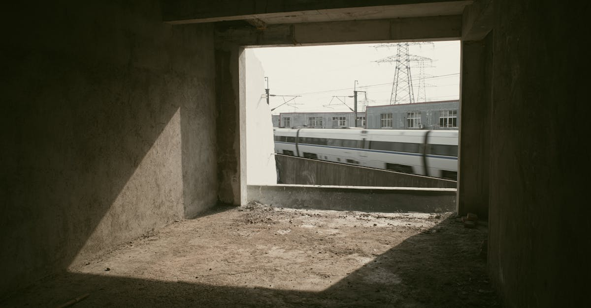

Le Sursis de Brightline West: Un Signal pour les Investisseurs?
L'actualité financière est souvent le théâtre de décisions qui, au-delà de leur impact immédiat, révèlent les dynamiques profondes des marchés et les défis inhérents aux investissements à grande échelle. Le récent développement concernant Brightline West en est une illustration frappante. Les détenteurs d'obligations, représentant une somme colossale de 1,8 milliard de dollars destinés à financer la ligne ferroviaire à grande vitesse entre la Californie du Sud et Las Vegas, ont accordé à l'entreprise un délai supplémentaire de trois mois pour injecter des capitaux frais. Cette décision, loin d'être anodine, marque une étape cruciale où les créanciers affirment un contrôle accru sur un projet d'envergure. Elle soulève des questions fondamentales sur la viabilité des mégaprojets d'infrastructure et la prudence requise des investisseurs.
👉 À lire : Faillite Spirit Airlines : Quand l'IA décrypte l'insensé financier
Qu'est-ce que cela signifie concrètement ? Il s'agit d'un sursis, certes, mais aussi d'un avertissement. Les investisseurs ont des attentes claires en matière de retour sur investissement et de gestion des risques. Lorsque ces attentes sont menacées, ils n'hésitent pas à utiliser leur poids pour protéger leurs intérêts. Le projet Brightline West, qui promet de relier deux des villes les plus dynamiques de l'Ouest américain par un corridor ferroviaire ultra-moderne, est emblématique des ambitions et des complexités du 21e siècle. Il incarne la vision d'une mobilité transformée, mais aussi la dure réalité des contraintes financières et des aléas de l'exécution. Les 1,8 milliard de dollars engagés reflètent une confiance initiale dans cette vision, mais l'exigence de capitaux supplémentaires indique que le chemin est semé d'embûches.
👉 À lire : Big Tech : Le Verdict des Résultats Redessine l'Avenir du Marché
Pour les observateurs du marché, cette situation est une piqûre de rappel. Les investissements dans les infrastructures, bien que potentiellement très rémunérateurs à long terme, sont souvent assortis de risques substantiels : retards de construction, dépassements de coûts, incertitudes réglementaires, et fluctuations de la demande. La patience des obligataires n'est pas infinie ; elle est conditionnée par des progrès tangibles et une gestion financière rigoureuse. Cette manœuvre de Brightline West et de ses créanciers nous rappelle l'importance capitale d'une analyse de risque approfondie, une tâche de plus en plus facilitée par les outils modernes d'intelligence artificielle qui peuvent déchiffrer des volumes de données impensables pour l'esprit humain. Dans un monde où les opportunités abondent, mais les pièges aussi, la capacité à évaluer précisément les engagements financiers devient un avantage concurrentiel décisif.
L'Épée de Damoclès des Obligations: Comprendre le Risque d'Infrastructure
Les obligations, ces titres de créance que des entités comme Brightline West émettent pour financer leurs opérations ou projets, sont la pierre angulaire de nombreux investissements institutionnels. Elles offrent une promesse de rendements fixes, souvent perçus comme plus stables que les actions. Cependant, l'affaire Brightline West illustre parfaitement que même les obligations peuvent être porteuses de risques significatifs, surtout lorsqu'elles sont liées à des projets d'infrastructure colossaux et complexes. Un investisseur qui achète une obligation prête, en essence, de l'argent à l'émetteur, avec l'attente d'un remboursement du capital et des intérêts à des échéances prédéfinies. Mais que se passe-t-il lorsque l'émetteur rencontre des difficultés à honorer ses engagements ? C'est là que l'épée de Damoclès commence à pendre.
Les projets d'infrastructure à grande échelle, par leur nature même, sont des entreprises à haut risque. Le pont suspendu, le tunnel sous-marin ou, dans ce cas, la ligne ferroviaire à grande vitesse entre la Californie et Las Vegas, sont des symboles d'ingéniosité humaine, mais aussi des gouffres potentiels de ressources. Les retards de construction sont monnaie courante, les dépassements de coûts presque inévitables, et les projections de revenus (ici, le nombre de passagers) peuvent être optimistes. « La complexité des mégaprojets défie souvent les modèles financiers les plus sophistiqués, » observe fictivement Dr. Antoine Lefèvre, expert en financement de projets à l'Université de Genève. « Les variables imprévues, qu'elles soient géologiques, réglementaires ou socio-économiques, peuvent rapidement transformer un investissement prometteur en un fardeau financier. »
C'est précisément ce scénario que les obligataires de Brightline West tentent de prévenir en exigeant plus de contrôle et de capitaux. Leur action n'est pas une simple demande, mais une affirmation de leur droit à protéger leur capital. Ils ne veulent pas voir leur investissement de 1,8 milliard de dollars s'évaporer dans les sables du désert californien. Leur intervention reflète une prise de conscience collective de la fragilité inhérente à ces engagements à très long terme. En comparaison, des actifs comme l'or ou d'autres métaux précieux, bien que soumis à leurs propres dynamiques de marché, offrent une forme de stabilité et de liquidité qui est souvent recherchée précisément pour contrebalancer les risques inhérents aux investissements de projet. La capacité à arbitrer entre des actifs à risque élevé et des valeurs refuges est une compétence cruciale, et l'intelligence artificielle peut jouer un rôle majeur en identifiant les points d'équilibre optimaux et en diversifiant les portefeuilles pour minimiser l'exposition à des événements imprévus comme ceux que vit Brightline West.
Liquidités et Calendrier: Les Enjeux Cruciaux du Financement de Projets
La décision des obligataires de Brightline West d'accorder un délai de trois mois pour l'injection de capitaux supplémentaires met en lumière deux piliers fondamentaux du financement de projets : la liquidité et le respect des calendriers. Dans le monde des mégaprojets, le cash est roi. Sans un flux de trésorerie suffisant, même les visions les plus audacieuses peuvent s'écrouler. Ce sursis de trois mois n'est pas un acte de charité, mais une stratégie calculée. Il offre à Brightline West une dernière chance de prouver sa capacité à sécuriser les fonds nécessaires pour maintenir le projet sur les rails, littéralement.
Mais que signifie réellement « injecter du capital » dans ce contexte ? Il peut s'agir de diverses options : la recherche de nouveaux investisseurs en fonds propres, l'obtention de prêts supplémentaires auprès de banques, la renégociation de termes avec les créanciers existants, ou même une contribution accrue des partenaires actuels du projet. Chacune de ces voies présente ses propres défis et complexités. Trouver de nouveaux investisseurs dans un délai aussi court, surtout quand le projet est déjà sous surveillance, est une tâche ardue. Les banques exigeront des garanties solides, et les partenaires existants pourraient être réticents à engager davantage de fonds sans une réévaluation complète des risques et des rendements. Le temps presse, et chaque jour sans solution financière concrète augmente la pression et l'incertitude.
« Dans le financement de projets d'infrastructure, le temps est une ressource aussi précieuse que le capital, » affirme fictivement Mme Sophie Duval, directrice de l'investissement chez Horizon Capital. « Chaque retard se traduit par des coûts supplémentaires, une érosion de la confiance des investisseurs et une augmentation du risque de défaillance. »
Le calendrier est d'autant plus critique que les retards ne sont pas seulement financiers. Ils peuvent entraîner des pénalités contractuelles, des dépassements de budgets opérationnels, et même des changements dans les conditions de marché qui pourraient rendre le projet moins viable à terme. Imaginez l'impact d'un retard de plusieurs mois sur les prix des matériaux de construction, la disponibilité de la main-d'œuvre, ou même l'évolution des habitudes de voyage post-pandémie. Pour les investisseurs qui cherchent à naviguer dans ces eaux complexes, la capacité à anticiper et à modéliser l'impact des retards est essentielle. C'est là que l'intelligence artificielle peut offrir un avantage décisif, en analysant des milliers de scénarios potentiels et en fournissant des projections de risque bien plus précises que toute analyse humaine. En matière de liquidités et de respect des délais, la réactivité et la précision offertes par l'IA peuvent faire la différence entre le succès et l'échec d'un projet de cette envergure.

Quand les Mégaprojets Rencontrent la Réalité du Marché: Leçons pour Demain
L'histoire regorge d'exemples de mégaprojets d'infrastructure qui, malgré des débuts prometteurs et des financements colossaux, se sont heurtés à la dure réalité du marché. De l'Opéra de Sydney, dont le coût a été multiplié par 14, à la ligne de train à grande vitesse californienne elle-même, dont les estimations initiales ont explosé, les histoires de dépassements budgétaires et de retards sont légions. Le cas de Brightline West s'inscrit dans cette lignée, offrant des leçons précieuses pour les investisseurs et les décideurs de demain. La première leçon est celle de l'optimisme biaisé. Les promoteurs de projets ont souvent tendance à sous-estimer les coûts et les délais, tout en surestimant les bénéfices et la demande future. Cette tendance, bien documentée en économie comportementale, peut conduire à des décisions d'investissement erronées dès le départ.
La deuxième leçon concerne le rôle de l'environnement macroéconomique. Un projet lancé dans une période de croissance économique et de faibles taux d'intérêt peut se retrouver en difficulté si les conditions changent radicalement. Des chocs externes, comme une inflation inattendue, une crise énergétique ou des tensions géopolitiques, peuvent faire dérailler les plans les mieux conçus. Brightline West, comme beaucoup d'autres projets, est vulnérable à ces forces invisibles mais puissantes. La capacité d'un projet à s'adapter à un environnement changeant est un facteur clé de sa résilience. « Les marchés ne pardonnent pas l'immobilisme, » dit fictivement Dr. Liam O'Connell, économiste à l'Université de Dublin. « Un projet qui ne peut pas pivoter ou trouver de nouvelles sources de financement face à l'adversité est condamné. »
Enfin, l'affaire Brightline West souligne l'importance d'une analyse objective et continue. Les investisseurs ne peuvent pas se contenter des projections initiales ; ils doivent constamment évaluer la performance du projet, la gestion des risques et la capacité de l'équipe à surmonter les obstacles. C'est ici que la technologie moderne, en particulier l'intelligence artificielle, trouve sa pleine justification. Les algorithmes peuvent digérer des volumes massifs de données — rapports de construction, analyses de marché, tendances économiques mondiales — pour fournir une évaluation en temps réel de la santé financière et opérationnelle d'un projet. Ils peuvent identifier les signaux faibles de détresse bien avant qu'ils ne deviennent des crises. Ces outils permettent de passer d'une prise de décision réactive à une approche proactive, essentielle pour naviguer dans la complexité des mégaprojets et pour protéger les investissements dans un monde où la seule constante est le changement. Cette objectivité est d'autant plus cruciale pour des actifs à forte valeur comme les métaux précieux, où les fluctuations peuvent être rapides et les opportunités fugaces.
La Quête de Stabilité: Pourquoi les Métaux Précieux Attirent en Période d'Incertitude
Face à la complexité et aux incertitudes inhérentes aux mégaprojets d'infrastructure comme Brightline West, de nombreux investisseurs se tournent vers des actifs réputés pour leur stabilité et leur rôle de valeur refuge. Les métaux précieux, et l'or en particulier, incarnent cette quête de sécurité dans un monde financier de plus en plus volatil. Alors que les obligations de projets peuvent être sujettes à des retards, des dépassements de coûts et des réévaluations de risques, l'or conserve une place unique dans l'imaginaire collectif et les portefeuilles d'investissement comme une réserve de valeur intemporelle. Son attrait ne réside pas dans sa capacité à générer des flux de revenus, mais dans sa rareté, sa durabilité et sa reconnaissance universelle comme monnaie alternative et protection contre l'inflation et la dépréciation des monnaies fiduciaires.
Les périodes d'incertitude économique, de tensions géopolitiques ou de crises sanitaires mondiales voient souvent une augmentation de la demande pour l'or. C'est un réflexe quasi instinctif des investisseurs de se réfugier vers ce qui a historiquement prouvé sa résilience. Contrairement aux actions qui dépendent de la performance des entreprises, ou aux obligations qui sont liées à la solvabilité d'un émetteur, l'or est un actif tangible qui ne peut être imprimé à volonté par une banque centrale. Sa valeur est intrinsèque et ne dépend pas directement des résultats d'un projet spécifique ou des politiques d'une entreprise. « L'or est l'antidote à l'incertitude, » dit fictivement Dr. Isabella Rossi, spécialiste des marchés des matières premières à la London School of Economics. « Quand le système financier semble vaciller, les investisseurs se tournent vers ce qui a résisté à l'épreuve du temps. »
La comparaison avec un investissement comme Brightline West est éclairante. D'un côté, un projet ambitieux mais lourd, dont la réalisation est étalée sur des années et soumise à d'innombrables variables externes. De l'autre, un actif liquide, universellement accepté, dont le prix réagit aux dynamiques macroéconomiques et aux sentiments de marché, mais qui n'est pas directement affecté par les aléas d'un chantier de construction ou les décisions d'un conseil d'administration. Pour l'investisseur soucieux de diversifier son portefeuille et de se prémunir contre les risques systémiques ou spécifiques à un secteur, l'intégration des métaux précieux est une stratégie éprouvée. Et avec l'avènement de l'intelligence artificielle, la capacité à anticiper les mouvements des prix de l'or et des métaux précieux, à identifier les points d'entrée et de sortie optimaux, et à exécuter des transactions avec une efficacité inégalée, transforme la gestion de ces actifs en une science de précision. L'IA permet de capter la valeur de ces refuges traditionnels avec une agilité et une perspicacité adaptées aux marchés modernes.

L'IA au Service de l'Investisseur: Optimiser les Décisions dans un Monde Complexe
L'affaire Brightline West, avec ses rebondissements financiers et ses défis d'exécution, souligne l'impératif pour les investisseurs d'adopter des outils et des stratégies de pointe pour naviguer dans un paysage de plus en plus complexe. C'est précisément là que l'intelligence artificielle (IA) entre en jeu, révolutionnant la manière dont les décisions d'investissement sont prises, notamment pour des actifs comme l'or et les métaux précieux. L'IA n'est plus une promesse futuriste, mais une réalité opérationnelle capable d'analyser des quantités massives de données à une vitesse et avec une précision qu'aucun être humain ne pourrait égaler.
Comment l'IA transforme-t-elle l'investissement ? Premièrement, par l'analyse prédictive. Les algorithmes d'apprentissage automatique peuvent scruter des flux d'informations en temps réel – des rapports économiques, des actualités géopolitiques, des données de marché historiques, des volumes de transactions – pour identifier des motifs et des tendances qui échapperaient à l'œil humain. Pour les métaux précieux, cela signifie la capacité de prévoir les mouvements de prix avec une fiabilité accrue, en tenant compte de facteurs aussi divers que les taux d'intérêt, l'inflation, la force du dollar, et même le sentiment général du marché exprimé sur les réseaux sociaux. Cette capacité à anticiper est un atout inestimable.
Deuxièmement, l'IA excelle dans la gestion des risques et l'optimisation de portefeuille. Face à des investissements à haut risque comme les obligations d'infrastructure, l'IA peut évaluer l'exposition au risque d'un portefeuille, identifier les corrélations cachées entre différents actifs et suggérer des ajustements pour maximiser les rendements tout en minimisant la volatilité. Elle peut, par exemple, recommander une allocation optimale entre des actifs de croissance et des valeurs refuges comme l'or, assurant une diversification qui protège contre les chocs inattendus. « L'intelligence artificielle ne remplace pas l'intuition humaine, elle l'augmente exponentiellement, » explique fictivement M. Jean-Luc Moreau, fondateur d'un fonds quantitatif. « Elle fournit une clarté et une objectivité qui étaient auparavant inaccessibles, permettant aux investisseurs de prendre des décisions plus éclairées et moins sujettes aux biais émotionnels. »
Enfin, l'IA permet une exécution ultra-rapide des transactions. Dans des marchés où chaque milliseconde compte, les systèmes d'IA peuvent identifier une opportunité et exécuter un ordre d'achat ou de vente en une fraction de seconde, capitalisant sur des micro-fluctuations que les traders humains ne pourraient jamais exploiter. Pour le trading de l'or et des métaux précieux, cela signifie que les investisseurs peuvent réagir instantanément aux nouvelles du marché, sécurisant des gains ou limitant des pertes avec une efficacité maximale. Loin d'être une simple mode, l'IA est en train de devenir un compagnon indispensable pour tout investisseur souhaitant naviguer les complexités des marchés modernes avec confiance et performance.
Au-delà des Obligations: Diversification et Stratégies Intelligentes pour 2026 et Au-delà
L'expérience de Brightline West nous offre une leçon cruciale sur l'importance de la diversification et la nécessité d'adopter des stratégies d'investissement intelligentes pour les années à venir. Se concentrer sur un seul type d'actif, surtout s'il est lié à un projet de longue haleine et à forte intensité capitalistique, expose les investisseurs à des risques considérables. La sagesse populaire en finance ne dit-elle pas de ne pas mettre tous ses œufs dans le même panier ? Cette maxime est plus pertinente que jamais à l'aube de 2026.
La diversification ne se limite pas à la répartition entre actions et obligations. Elle implique une exploration plus large des classes d'actifs, y compris les matières premières, l'immobilier, les devises, et bien sûr, les métaux précieux. Un portefeuille bien diversifié agit comme un bouclier, où la sous-performance d'un segment est compensée par la résilience ou la croissance d'un autre. Par exemple, si un investissement dans un projet d'infrastructure comme Brightline West est confronté à des difficultés, un investissement parallèle dans l'or ou l'argent pourrait servir de contrepoids, protégeant le capital global de l'investisseur. Les métaux précieux ont historiquement démontré une faible corrélation avec d'autres classes d'actifs, ce qui en fait des outils de diversification idéaux.
L'intégration de l'intelligence artificielle dans cette démarche de diversification est un game changer. L'IA peut analyser des milliers de combinaisons d'actifs, évaluer leurs corrélations historiques et prédictives, et construire des portefeuilles optimaux qui s'alignent sur le profil de risque et les objectifs de rendement de chaque investisseur. Elle peut identifier les moments propices pour ajuster la pondération des métaux précieux, par exemple, en fonction des signaux macroéconomiques ou des tendances de marché émergentes. Plutôt que de s'appuyer sur des intuitions ou des analyses partielles, l'investisseur moderne peut s'appuyer sur des données objectives et des modèles sophistiqués.
« La diversification, c'est l'art de la résilience financière. Avec l'IA, cet art devient une science exacte, » affirme fictivement Mme Clara Dubois, stratège en investissement. « Elle permet de naviguer les incertitudes avec une feuille de route dynamique, toujours ajustée aux réalités du marché. »
Pour 2026 et au-delà, les investisseurs qui réussiront seront ceux qui embrassent la complexité du marché tout en utilisant les outils les plus avancés pour la simplifier. Cela signifie non seulement investir dans une gamme variée d'actifs, mais aussi utiliser l'IA pour surveiller, analyser et ajuster ces investissements en permanence, assurant que leur portefeuille est toujours optimisé pour la performance et la protection du capital. Les opportunités sont là, mais la prudence et l'intelligence stratégique sont les clés pour les saisir sans tomber dans les pièges.
Conclusion: Naviguer les Eaux Troubles de l'Investissement Moderne
L'épisode de Brightline West et ses obligataires offre une perspective fascinante et, par moments, inquiétante sur les réalités de l'investissement dans les projets d'infrastructure du 21e siècle. Il nous rappelle que même les visions les plus audacieuses peuvent être confrontées à des défis financiers monumentaux, nécessitant une réévaluation constante des risques et des opportunités. La décision d'accorder un sursis de trois mois à l'entreprise pour injecter des capitaux supplémentaires n'est pas seulement un acte de gestion de crise ; c'est un signal puissant sur la nécessité d'une diligence accrue et d'une gestion proactive dans tous les domaines de l'investissement.
Les leçons tirées de cette situation sont multiples. Elles soulignent l'importance cruciale de la liquidité, du respect des calendriers et de la prudence face à l'optimisme inhérent aux mégaprojets. Elles mettent en exergue la fragilité des engagements à long terme et la nécessité d'une diversification intelligente pour protéger le capital. Mais au-delà de ces enseignements traditionnels, l'ère moderne nous offre de nouvelles solutions. L'intelligence artificielle se positionne comme un allié indispensable pour l'investisseur éclairé, capable de déchiffrer la complexité, d'anticiper les mouvements de marché et d'optimiser les stratégies avec une précision inégalée.
Dans un monde où les incertitudes économiques et géopolitiques sont omniprésentes, la quête de stabilité devient une priorité. Les métaux précieux, et l'or en particulier, continuent de jouer leur rôle historique de valeur refuge, offrant un contrepoids essentiel aux investissements plus volatils. Combiner la résilience de l'or avec la puissance analytique de l'IA n'est plus un luxe, mais une nécessité pour quiconque souhaite naviguer les eaux parfois troubles de l'investissement moderne avec confiance et succès. L'avenir appartient aux investisseurs qui sauront allier la sagesse des traditions financières à l'innovation technologique, transformant les défis en opportunités et sécurisant leur avenir financier dans un monde en perpétuelle mutation.